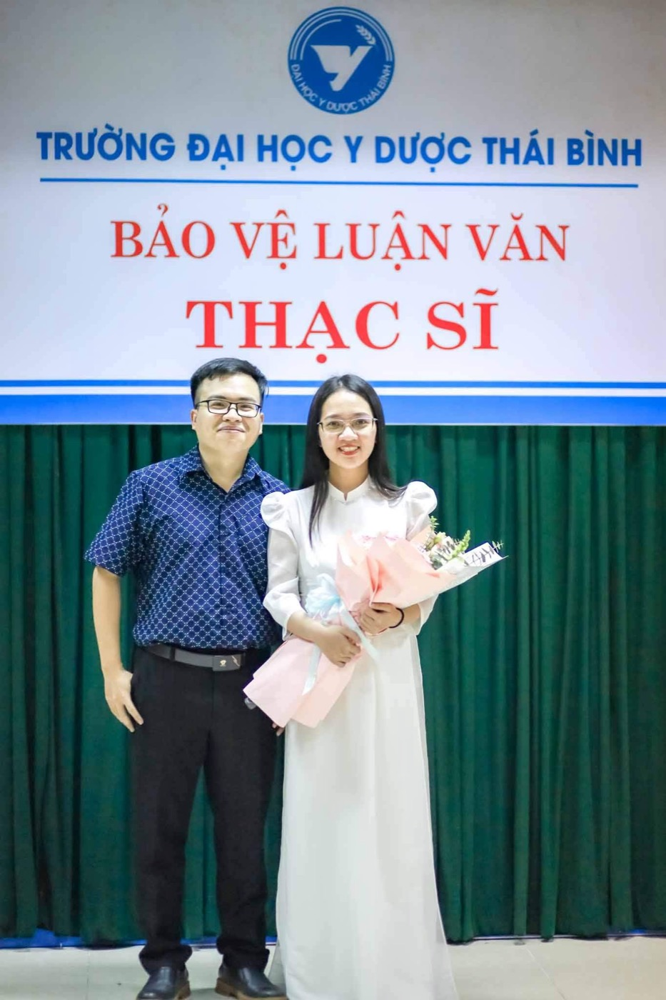
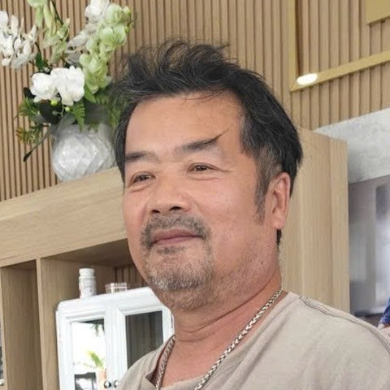
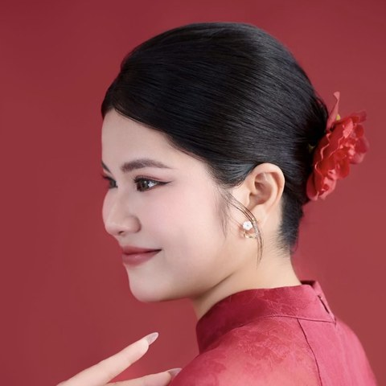

Dành cho anh chị muốn giảm mỡ thừa và sống khỏe mạnh hơn
KHÔNG kiêng khem khổ sở — KHÔNG thực phẩm chức năng — KHÔNG ép tập luyện cực đoan
ThS.BS Nguyễn Trung Hiếu & ThS.BS Lê Thị Minh Tâm
Hai bác sĩ dinh dưỡng lâm sàng sẽ trực tiếp hướng dẫn Anh/Chị trong 2 buổi
Nếu Anh/Chị thấy hình bóng mình trong đó, hãy thả lỏng và yên tâm:
Lỗi tuyệt đối không phải do Anh/Chị thiếu kỷ luật hay thiếu quyết tâm. Vấn đề nằm ở chỗ: Anh/Chị đang chưa biết được nguyên lý chuyển hóa của cơ thể mà tôi sắp chia sẻ tới đây.
Kho mỡ nội tạng của cơ thể được khóa chặt bởi 3 ổ khóa sinh học. Trước đây Anh/Chị nỗ lực nhưng chưa thành công vì mới chỉ tác động vào đúng một ổ khóa:
Ăn tối muộn (sau 20h) hoặc ăn rải rác làm lệch pha đồng hồ sinh học tại gan và tụy. Về đêm, hormone Melatonin tăng cao sẽ ức chế khả năng tiết Insulin tự nhiên. Cùng một lượng thức ăn, nạp sai thời điểm sẽ khiến cơ thể không kịp dọn dẹp mỡ máu và làm ức chế quá trình đốt mỡ tự nhiên khi ngủ.
Áp lực công việc và ngủ dưới 6 tiếng/đêm khiến hormone Cortisol tăng cao liên tục. Do mô mỡ nội tạng có mật độ thụ thể tiếp nhận Cortisol cao vượt trội, hormone này phát tín hiệu ưu tiên "gom mỡ" về vùng bụng, đồng thời kích hoạt các cơn thèm ngọt và tinh bột vào cuối ngày.
Nhịn ăn cực đoan giúp hạ Insulin để mở kho mỡ, nhưng đồng thời lại kích hoạt cơ chế sinh tồn: cơ thể tự động hạ mức chuyển hóa nền (BMR) và rút đạm từ cơ bắp để tạo năng lượng. Hậu quả là mỡ nội tạng không giảm bao nhiêu nhưng cơ bắp bị teo tóp, khiến cơ thể tích mỡ nhiều hơn ngay khi ăn uống trở lại.
Muốn giảm mỡ nội tạng bền vững, Anh/Chị không thể chỉ dựa vào nhịn ăn hay ý chí chịu đói. Chúng ta phải mở đồng bộ cả 3 ổ khóa: Ăn đúng cấu trúc + Ổn định giấc ngủ và căng thẳng + Ăn đúng nhịp sinh học.
Chúng tôi là ThS.BS Nguyễn Trung Hiếu và ThS.BS Lê Thị Minh Tâm — hai bác sĩ dinh dưỡng lâm sàng, và cũng là đôi vợ chồng.

Nhiều năm ở bệnh viện, chúng tôi thường gặp một kiểu bệnh nhân: mỗi lần tái khám, đơn thuốc dày thêm một chút. Nhưng vòng bụng vẫn vậy. Mỡ máu, đường huyết vẫn ở ngưỡng báo động.
Không phải vì họ không cố gắng. Mà vì một lượt khám ngắn ngủi chỉ đủ để chỉnh liều thuốc, không đủ để chỉ cho một người cách sửa nếp ăn nếp sống từ gốc.
Chính những trải nghiệm lâm sàng thực tế đó đã thôi thúc chúng tôi hệ thống hóa tri thức y khoa thành giải pháp Bản Đồ Khôi Phục Chuyển Hóa.
"Không phải nhịn bữa nào, chỉ sắp xếp lại cho cân bằng. 26 ngày, tôi từ 65kg xuống 61,5kg. Cơ thể nhẹ đi và tôi biết yêu bản thân mình hơn mỗi ngày."
"Em từng ăn kiêng cực đoan rồi ăn bù, vòng lặp mãi không thoát. Đi khám nhiều nơi, ai cũng bảo ăn ít lại. Nhưng Bác sĩ là người đầu tiên giải thích cho em tại sao ăn ít mà vẫn không xuống cân."
Để giảm mỡ nội tạng, cải thiện mỡ máu và đường huyết, cần áp dụng Nguyên tắc dinh dưỡng chuyển hóa dựa trên 3 trục sinh học:
Thiết lập khung giờ ăn cố định và kết thúc bữa tối sớm phù hợp với lịch làm việc thực tế của Anh/Chị.
Chỉ cần đưa bữa ăn về đúng nhịp làm việc của gan và tụy, cơ thể sẽ chủ động xử lý mỡ máu sau ăn và kích hoạt lại khả năng dọn dẹp mỡ thừa tự nhiên suốt đêm dài.
Không bắt ép cơ thể vào những bài tập kiệt sức gây thêm stress.
Bác sĩ hướng dẫn các giải pháp vận động kích hoạt chuyển hóa vừa sức cùng các mẹo thư giãn hệ thần kinh, giúp hạ hormone Cortisol, ngủ sâu giấc hơn, cắt đứt cơn thèm ăn theo cảm xúc và chặn đứng phản xạ tích mỡ bụng do áp lực cuộc sống.
Áp dụng mô hình Xếp Đĩa chuẩn y khoa: cân đối xơ – đạm – tinh bột hấp thu chậm.
Đủ đạm giúp bảo vệ khối cơ để giữ vững mức chuyển hóa nền, trong khi đường huyết ổn định sẽ giúp Anh/Chị cắt đứt cơn thèm ăn tự nhiên mà không cần phải gồng mình chịu đói.
Hầu hết mọi người không thất bại vì thiếu kiến thức. Họ thất bại vì làm một mình.
Vì vậy phương pháp này không dừng lại ở ba trục trên. Anh/Chị có người đồng hành và một cách tự theo dõi đơn giản mỗi ngày. Khi biết mình đang ở đâu và có người đi cùng, việc ăn đúng dần thành nếp, không còn là cuộc chiến với ý chí ở mỗi bữa ăn.
Toàn bộ phương pháp này sẽ được hai Bác sĩ hướng dẫn trực tiếp trong 2 buổi Workshop sắp tới. Dưới đây là lộ trình chi tiết của 2 buổi.
Sổ tay thực hành Bản Đồ Khôi Phục Chuyển Hóa (Workbook digital): Cuốn sổ đi cùng Anh/Chị qua cả hai buổi học, mỗi ô trống là một quyết định Anh/Chị tự viết ra cho chính mình.
Cẩm nang đọc hiểu Chỉ số khám sức khỏe: Giải thích bằng ngôn ngữ dễ hiểu về ý nghĩa của các chỉ số thường gặp trong một buổi khám sức khỏe, giúp Anh/Chị hiểu được kết quả khám sức khỏe của mình dễ dàng hơn, không còn phải tra cứu từng chỉ số đang nói lên điều gì.
Bản ghi buổi học: Xem lại toàn bộ bài giảng bất cứ lúc nào nếu Anh/Chị bận đột xuất hoặc muốn ôn lại kỹ hơn cùng người thân trong gia đình.
Quyền tham gia Cộng đồng Đồng hành Chuyển hóa: Không bị "bỏ rơi" sau khi học xong. Anh/Chị được tham gia không gian chung để đặt câu hỏi, cập nhật kiến thức mới và nhận sự giải đáp trực tiếp từ đội ngũ Bác sĩ Dinh dưỡng Lâm sàng.
Anh/Chị hoàn toàn không chịu bất kỳ rủi ro nào:
Chúng tôi tổ chức Workshop này để trao đi giải pháp Y khoa thực sự có giá trị, không nhằm mục đích thương mại. Khoản phí 99.000đ chỉ là một sự cam kết nhỏ để Anh/Chị tự hứa với bản thân sẽ nghiêm túc sắp xếp thời gian tham dự trọn vẹn.
Nếu sau khi tham dự xong buổi học, Anh/Chị thấy kiến thức không thực tế, không đúng chuẩn Y khoa, hoặc cảm thấy phương pháp này không mang lại giá trị cho bản thân, chỉ cần gửi một tin nhắn cho Ban tổ chức.
Chúng tôi sẽ hoàn lại 100% chi phí 99.000đ cho Anh/Chị ngay lập tức mà không hỏi thêm bất kỳ điều gì. Anh/Chị vẫn được giữ lại toàn bộ tài liệu và Sổ tay thực hành đã nhận.

Là người thích vận động nhưng cơ thể chú không cho phép nữa. Mấy năm nay chú đau nhức xương khớp, nhất là khớp gối. Chạy được một quãng là gối lên tiếng. Rồi chú chạy ngắn lại và thưa dần.
Gần 2 tháng, chú giảm 5kg. Từ 81.1kg còn 76.1kg. Và điều chú vui nhất không phải cân nặng giảm mà là gối chú đã khỏe hơn, không còn đau như trước. Cơ thể tràn đầy năng lượng vào mỗi sáng thức dậy, cảm thấy vui vẻ cả ngày và ngủ sâu giấc suốt cả đêm dài.
Thấy con gái thay đổi, chú được hướng dẫn lại phương pháp dưới sự giám sát trực tiếp của bác sĩ. Lúc bắt đầu: mỡ nội tạng 14.5, vượt ngưỡng an toàn. HDL-C (mỡ máu bảo vệ tim) chỉ còn 0.98 mmol/L.
Ba tháng sau, xét nghiệm lại: HDL-C lên 1.20 (vùng an toàn); chú giảm 8.4kg, mỡ nội tạng về 11, tỷ lệ mỡ 23.7% → 17.4%.
Nhưng chú không nhắc mấy con số đó. Chú nhắc chuyện chú ngủ được, và thôi cáu gắt với người nhà. Lần đầu sau nhiều năm, chú đi tái khám mà không thấy lo như trước vì lần này chú biết rõ cơ thể mình.

Ngủ dậy vẫn nặng đầu. Ba giờ chiều đã hết pin. Và một niềm tin rất quen: muốn nhẹ đi thì phải chịu đói. Trang bắt đầu ở 58kg, tỷ lệ mỡ 34.1%.
Ba tháng sau: giảm 7.1kg, trong đó 5kg là mỡ. Tỷ lệ mỡ về 28.3%, vào vùng khuyến nghị. Vòng bụng giảm 12cm. Phục hồi tốt hệ tiêu hóa dù trước đó từng trải qua một ca phẫu thuật đại tràng. Luôn cảm thấy ăn no, ăn ngon miệng và cân nặng vẫn giảm.
Trước đây 1-2h sáng vẫn chưa ngủ được nhưng đến nay 9h tối là cơn buồn ngủ đã ùa về, cô ngủ sâu giấc suốt đêm, sáng dậy thấy năng lượng tràn trề, không phải kiểu bùng lên rồi tụt, mà đủ đều để đi hết một ngày làm việc mà không phải gồng sức. Chiếc đầm ôm sát giữ trong tủ nhiều năm, lần này đã mặc vừa.